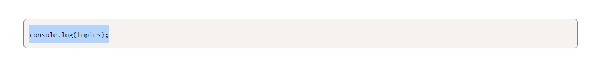

HTML
Head(3.1.3)
- The head element contains information about the webpage.
- The body element represents the visible content shown to the user.
- The < style > element defines the CSS styles associated with a website.
- The < base > element defines the base URL for a webpage.
- The < link > element connects an external resource to the HTML document.
- The < meta > element defines metadata such as the character set, description, keywords, author, and viewport. Read more!
- The < script > element embeds client-side scripts in the HTML document.
- Lightly touched utf-8 but can read more here
- < !DOCTYPE html > is a declaration. This declaration tells the browser what document type it should expect when it is opened. This particular < !DOCTYPE html > declaration is letting the browser know to expect HTML on the page. Note < !DOCTYPE > is not case-sensitive because it is a declaration. Declarations are not case-sensitive; HTML elements are case-sensitive.
- Next, we see the < html > opening tag, which represents the root, or start, of our HTML document. An HTML attribute defines additional information about an element for example you may see inside the < html > tag is an attribute of lang="en", which tells the browser the language for the webpage (in this case, en for English).
- HTML attributes are always defined in the beginning element, never the closing element.
- Next, we see the < head > opening element. The < head > element contains the metadata for our web application. Metadata is data about our webpage that the browser uses to effectively serve our webpage to users. Metadata is typically not seen by users, but it contains important information about accessibility, search engines, and performance.
- The < head > element is a container for metadata. < meta > elements contain information about the page that is used by the browser. The user won’t see information in the or elements.
- The < title > element defines the title for a webpage. This element is required and is extremely important for Search Engine Optimization (SEO).
- Search engine optimization (SEO) is the process of improving the ranking of a website in search engines such as Google or Bing. Better SEO results in your website more frequently showing up in searches.
attribute lang= ''en''" />
Body(3.1.4)
- Elements that are nested inside other elements are called child elements. If there are three elements nested inside of a < body > element, those three nested elements are known as child elements. The element that holds all the children—in this case, the < body > element—is known as the parent element. This “parent/child” language is often used by developers to explain the relationship among elements in HTML.
- The < h1 > is the opening tag and < /h1 > is the closing tag. The content in between those tags is what is rendered on the page
- The < h1 >, < h2 >, < h3 >, < h4 >, < h5 >, and < h6 > elements represent the level of heading a given text block represents. Headings are exactly what they sound like: larger or more prominent titles and subtitles to organize a page. The closer the number is to zero the biger the text is ie ( h1 is biger than h6 )
- The < p > element represents a paragraph or block of text. You'll use this element extensively to wrap most of the text on your webpages.
- The < ul >, < ol >, and < li > elements represent unordered lists, ordered lists, and list items. In essence, these HTML elements represent bulleted or numbered lists
- The < img > element contains information about images that are displayed on the webpage. The < img > element can contain various attributes
- the src attribute is the most important because it defines the location of the image
- The `alt` attribute contains a text string that describes the appearance and functionality of the image.(The alt text is important for screen readers and other assistive technologies. Alt text can also improve search engine rankings for your website.){I understood alt as a alternate version for like a blind person reading hearing it read to him}
- The < br > element creates a line of empty space, or a line break, between two blocks of content. There is a < br >
- the < a > element (which stands for anchor) creates links to the same webpage or other webpages
- The href attribute points to the URL for the link. The following text is what shows up on the web page
- On The Job : Order matters! When using headings, it is important that we use heading tags in order from < h1 > to < h6 > to make the page accessible to users who access the page using screen readers or other devices. In addition, the biggest heading,< h1 >, should only appear once on each page.
- The < footer > appears at the bottom of the page and usually contains the author, copyright, contact, sitemap, and navigation. In our case, we have a < p > element that renders "I can code!", as follows:
" />
, < ol >, and < li >" />
" />
" />
" />
" />
Day 2
" />
CSS
the CSS File(3.2.3)
- A margin indicates how much space we want around the outside of an element.
- A padding indicates how much space we want around the content inside an element.
- For more information regarding the box model and how it is used to define space inside and outside elements (Read this!!!)
- Separation of concerns is a widely used term in web development and refers to separating code into different files based on use. It is one of the key design principles that we practice in the boot camp. Separation of concerns is based on the idea that each section of code should have its own responsibility. To learn more about this principle (Read this!!!)
- a selector defines the element or attributes to which the rules, or declarations, will apply
- Declarations contain two important components: the CSS property we want to apply and the value of the property ie the declaration color: blue; includes the CSS property color and the value for that property, blue
- * is used to apply a rule to all the elements visible on the page.
- In this rule, we have declared that ALL of the elements on the page will have the style properties margin and padding set as 0
- Header / footer adjust their corasponding zone
- we can combined two or more selectors into a single CSS rule with a comma, allowing the declarations to affect both selectors like in the example with h1,h2 they will share the same styling
- helps us write Do Not Repeat Yourself (DRY) code. Do Not Repeat Yourself (DRY) is a coding principle that encourages developers to reuse or share pieces of code in order to reduce the number of lines of code that need to be written or maintained. DRY can greatly reduce the overall size and complexity of a codebase.
- The < img > selector assigns property values to any image element in the markup.
- The display property is assigned with the block value, which assigns each image to start on a new line
- < ul > adjusts stuff to do with lists
- the CSS rule for the < ul > elements declares the font to be 20px, and the padding on the left of the unordered list to be 40px.
- < p > adjusts stuff to do with paragraphs
selector" />
elements" />
Link(3.2.4)
- Debugging is one of the most important parts of the development process. Every day, developers notice errors and review code that isn’t working. It’s important to get into the mindset that errors and mistakes are gifts. They tell us when something is wrong, and if we can stay curious, we can figure out what is happening and learn something new.
- a < link > element creates the connection to the external file.
- The rel attribute specifies the relationship between the current document and the linked document resource.
- The href attribute specifies the location (URL) of the external resourc. The href attribute is using a relative path.
- The location is derived from the current location (in this case, index.html)
- To locate the style sheet from the current location, we must look in the assets folder, hence assets/style.css
Link(3.2.5)
- The period preceding card designates this as a class selector. Any HTML element assigned to the class, card, will gain these property assignments from the CSS.
- the width of the element at 80% of the available width.
- The margin property assigns 40px to the top and bottom, and the auto value to the left and right.
- The border property assigns a border with a width of 5px that is solid and gray
- The box-shadow CSS property adds shadow effects around an element's frame. You can set multiple effects separated by commas. A box shadow is described by X and Y offsets relative to the element
- the X offset is 5px and defines the width or extent of the shadow on the X axis (or to the right of the box)
- the Y offset is 10px and defines the extent on the Y axis (or just below the box)
- Assigning colors in CSS can be done in many ways, including by semantic references such as gray or blue. We can also refer to a color by its hexadecimal code, or hex # (Find Hex numbers here)
- < section > is used to apply the class to appropriate elements followed by < /section >
- I also aplied a class to a img tag like so (independent note here)
- I made only a img class to affect the cat image only
- #name is like .name in style folder excep it does one element as its not a class
- universal selectors apply to all elements
- element selectors apply to specified elements
- Class selectors apply to all elements in the spicified class
- ID selectors apply to a specified element with that id
works" />

Day 2
Git
- git status: checks what branch we are currently on
- git checkout -b branch-name: creates a new branch and switches to it
- If you are a Windows user, Bash and Git Bash are the same thing.
- The cd command allows us to change directories. ie its how you navigate yor files
- cd .. goes back
- The ls command shows us a list of files and directories.
- The pwd command, which is short for "print working directory," will print out the directory that we are currently in to the terminal
- mkdir makes a new directory
- touch can be used to make a file
- start opens the file
Command Line Basics(2.2.4)
SSH Keys(2.2.6)
- s -al ~/.ssh can be used to show if any existing SSH keys are on your pc (Read More!!!)
- ssh-keygen -t ed25519 -C “your_email@example.com” can be used to make a ne ssh key (Read More!!!)
- The ssh-agent is a program that keeps track of a user's identity keys and passphrases.
- Enter eval “$(ssh-agent -s)” in your terminal to start the ssh-agent.
- Add your private SSH key to the ssh-agent using the ssh-add command. (Read More!!!)
- You can change the name that's associated with your Git commits using the git config command. The new name that you set will be visible in any future commits you push to GitHub from the command line. If you'd like to keep your real name private, you can use any text as your Git username. Changing the name associated with your Git commits using git config will only affect future commits and will not change the name used for past commits.(Read More!!!)
- You can use the git config command to change the email address you associate with your Git commits. The new email address you set will be visible in any future commits that you push to GitHub from the command line. Any commits that you made before changing your commit email address are still associated with your previous email address. (Read More!!!)
- ssh -T git@github.com Lets you test if you’ve set up your SSH connection correctly
Explore Git and GitHub(2.3.5)
- (git cheat sheet ) / (Intro website)
Create a GitHub Repository with a README File(2.3.6)
- The above link contains a video with instrucions on how to create git repo
Create GitHub Issues Using Markdown (2.3.7)
- The above link contains a video with instrucions on how to create github issue
Connecting local and cloud (2.4.3)
- Remember that we use Git in our local development environment to enable version control. This allows us to easily copy versions of the project files and folders to a local Git branch. Working on a copied version allows us to work on the development of the project in isolation in order to test functionality without needing to worry if another team member is also currently working on the project code.
- code . will open vs code
- Note artical conatins how install "open in browser"
- navagate to the folder you want to program in (use cd) use git clone < paste copied SSH value > replace "paste copied SSH value" with the SSH value you copied from GitHub:
Saving work with Git(2.4.6)
- The link has a really helpful video
- git status is used to check what branch we are currently on,
- git checkout -b feature/name is used to create a feature branch and puts you in said branch
- The git command must precede every Git statement.
- The checkout command is to move the working branch to a new branch.
- The -b flag creates a new branch.
- The feature/starter-code is the name of the new branch. We have added the prefix, feature, to indicate that it is a feature. It is good practice to name the branches for the feature that will be developed by them to help indicate the purpose of each branch.
- git add -A adds all changes
- The add command adds modifications in the current working branch to the staging area.
- The -A flag indicates that we want to add all changes.
- git commit -m "add starter code" is used to commit (ie how i understand puts it in the cloud to vote on adding to main) and adds a message so you describe what the changes encompass
- In the preceding Git statement, a commit was created that captures a snapshot of the currently staged changes. Once committed, feature/starter-code will be updated with the starter code.
- According to Git, the key to writing effective commit messages is to write them as imperative commands in the present tense. It is good practice to have a single convention on a team for consistency.(Read More!!!)
- git pull origin main used to double-check if our local branch is in sync with the base branch in GitHub
- the git keyword
- the pull command to receive a branch's modifications into the local environment
- The origin keyword indicates the source of the pull will be in the GitHub repo
- The main keyword indicates the branch
- we are receiving a branch called main from the GitHub repository.
- It is important to always do a git pull to make sure that you have the latest version of the project on your local computer before you start to work. Otherwise, you might be working on outdated code!
- git push origin feature/starter-code is used to push our changes to the remote branch.
- Use the push command to push the changes we have locally to our remote GitHub branch
- In the browser, navigate to your remote branch on GitHub. As you’ll see, there is now a remote feature/starter-code branch in GitHub. When using the push command, you can create a new remote branch or add new changes to an existing branch
Day 2
JavaScript
- ; goes at the end of almost each line in js
- Control flow is the order in which a computer executes code in a script.
- This website have a lot of infor on VariableS(Read more here)
- This website have a lot of infor on Data structures(Read more here)
- A variable is a named container that allows us to store data in our code.
- In Javascript a variable must have var before it to properly declare it like so
- The console.log method is used to output a message to the web console by adding an argument( the topics variable )
- The word console refers to a test environment that developers use to check out their code
- .log(), is a method, which means a set of instructions that can be executed by a computer
- The .log() method will output whatever we add inside the parentheses to the console(Read more here)
- The script.js file is linked within the < body > element.
- rather than link it used script, and to me this makes sense since JS is like the action of the website and the and it needs the script command to let it know what action to take(makes sense to me :P)
- If you’re using macOS, you can press Command+Option+I, and if you’re using windows, you can press Control+Shift+I
- right-click anywhere in the browser window and select "Inspect" from the menu
- The console.log method was created to make it easier for developers to test their code. Developers use it daily to debug and test the code that they write.
- The link to (3.3.4) has a great short video on control flow
- JavaScript is read from top to bottom, and order counts.
- Control flow can be interrupted, however. We can use conditional statements and loops to control the order in which code is executed(and fuctions look at 3.4.3-3.4.4 notes)
- An if statement is a way of introducing decision-making into our code
- when using the if statement, code will only execute if the statement meets a condition, or is true
- if, else if and, else are the big things you need to know about if statments
- if goes right at the beging and are just that if this than do that
- else if takes up the middle if any and are just that if not this but this than do that
- else go at the end if any and are just do this
- When the computer encounters an if statement in a JavaScript file, it will check to see if the condition that we provide is truthy.
- If it is, then it will do whatever action we ask it to do in between the curly brackets. If the condition isn’t true or has a value that isn’t truthy, then the computer will ignore whatever is in between the curly brackets and move on.
- What exactly do we mean by “truthy” and “falsy” in Javascript? A value is considered falsy if it is one of the following values: 0, -0, On, "", null, undefined, NaN, or a Boolean data type with the value of false. All other values, including a Boolean with the value of true, are considered truthy. (Read more here)
- "===" is a Boolean statment
- A boolean statment is a true or false question the computer will answer no matter what just be sure to ask the right question
- An array is a single variable that is used to hold a group of data. Arrays are typically used to hold data that is related in some way.
- To create an array, we declare a variable in the same way that we declared a variable with only one data item. That is, we use var and then give the variable a name. However, instead of assigning the variable to a single value, we assign the variable to a group of values.
- The following variable declaration demonstrates how we would represent our group of shapes in an array named shapes:
- Arrays are not limited to contain only a single type of data. A single array can store different types of data, such as strings, numbers, and so on.
- The example array stores information about a student named Lu, including his name, age, and whether he is currently enrolled
- "Lu", is surrounded by quotation marks. That is because Lu is a string, and strings need to be contained within quotation marks.
- 54 is a number and true is a Boolean value, no quotation marks are necessary for those values.
- As you can see, this array contains a string, a number, and a Boolean value.
- Arrays are useful tools for storing multiple items with different data types in a single variable, but not all arrays must have multiple data types. The array that we will add to our project only contains strings.
- To work with individual data items inside an array, we need to have one more piece of information: the location of the data item in the array. This location is identified with a unique number called an index. Using each piece of data's index, or location number, we can access individual data inside the array.
- computers start at positon 0 unlike us who start at 1 (don't do a OBOE) they count up by one like us though
- Notice that each item is assigned an index according to the order in which it is stored in the array: ["triangle", "square", "pentagon", "circle"]. Because indices follow a predictable pattern of 0, 1, 2, 3..., we can easily identify the index number by just looking at the array.
- If we wanted to access only the triangle, we start with the name of the variable that stores the array, which in our case is shapes. Then we add the index of triangle to the end of the array name in square brackets, as shown in the following line of code:
- For loops are alot but if we break it down its not so bad, but this is the general syntax
- First we declare a variable to count(I hate x as a variable name I used counter to better understand but if you have multiple for loops TopicCounter would be great)
- this lets us count the amout of times the loop has gone
- < is a Boolean statement it means less than
- shapes.length is 3 because 3 is the highest position in are array
- .length just gets the length of the array no matter what it is
- so this is a condiinal statment if x(TopicCounter) is less than shapes.length (3) than do whats next
- x++ is a shorthand for x = x + 1 this lets us count incrementaly ( if x was 2 it would be like 1+ 2(old x) = 3(new x)) {it sets x = to itself plus one}
- The link to (3.3.5) has a great short video on for loops
- /* */ // is used to comment out in js
- The link to (3.4.3) has a great short video on functions
- To create a function, we use the function keyword, similar to how we used the var keyword to declare a new variable. Then we give our function a unique name. A function's name is followed by parentheses ()
- Notice that the syntax is similar to if statements and for loops. The code to be executed is written inside the curly brackets {}
- We didn't call the function! In order for the code inside a function to run, we need to call the function. (helloWorld();) is what is used to call this function)
- Note that it is common practice to indent the for loop code below the function name, within the curly brackets, to add visual structure to your code.
- When we declare a function in our JavaScript code, we are creating a reusable block of code that performs a specific task. However, declaring a function does not mean that the code will automatically execute. We need to call the function in the code at the spot we want it to execute.
- To call a function, we use the name of the function in our JavaScript file where we want the code to execute. Remeber code flow read 3.3.4 notes
- Math.random() is a random number generator between 0 and 1
- multiplying Math.random() by topics.length ( see notes 3.3.5 ) gets you a random number between 0 and 3
- Math.floor always rounds down (1.1 = 1 , 1.9 = 1)
- so all that math stuff gives you a random integer between 0 - 3
- then its put into the topics array to give you a topic and assigns it to random topic
- Math.floor() and Math.random() are both properties of JavaScript's built-in Math object that can be used together to generate a random number. (Read more here)
VariableS in JS(3.3.3)

Add Conditional Logic(3.3.4)
Arrays and for Loops(3.3.5)